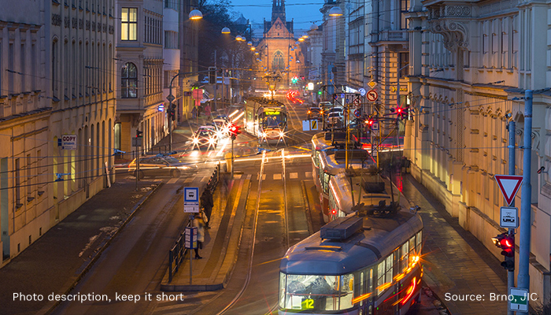

Jak se zapojit
Pro úspěch tohoto projektu je třeba, aby se do něj AKTIVNĚ zapojilo co nejvíce
subjektů, teprve pak to celé bude fungovat. #brnoregion je koncept, který
můžete v
rámci své
komunikace používat tak, jak vám to nejvíc vyhovuje.
Můžete využít jeden jediný obrázek nebo naopak do své komunikace převzít všechny grafické prvky,
vložit do svých materiálů texty z Toolboxu nebo se jimi jen inspirovat… Fantazii se meze
nekladou.
Nemáme logo, ani hlavní slogan, máme ale vizi, jasné cíle a společné hodnoty. Všichni z našeho
regionálního inovačního ekosystému mohou na projektu participovat tak, jak jim to bude
vyhovovat, a
zároveň přitom posilovat image znalostního regionu #brnoregion - pouhým
používáním
našich materiálů.
Jak se tedy aktivně zapojit?
Dodávejte nám informace
Potřebujeme vědět, co se u vás děje. Jaké máte úspěchy, na čem pracujete, jakou konferenci
pořádáte,
cokoli zajímavého, co spadá do tématu znalostního regionu pro oblast vývoje výzkumu a inovací,
nás
zajímá. Sdílejte s námi své úspěchy, aktivity, ocenění, vše vhodné pro medializaci na sociálních
sítí i v online světě.
Jak? Pište na: improve@brnoregion.com

Používejte materiály
Stáhněte si materiály
Toolbox #brnoregion je webová stránka, ze které si můžete stáhnout fotky,
texty,
prezentace, prostě
vše, co budete potřebovat k šíření slávy našeho znalostního regionu. Na www.toolbox.brnoregion.com
najdete jak „ready made“ materiály, tak i jejich jednotlivé části, takže si můžete vybírat
mezi
hotovým, profesionálně vyladěným dílem nebo desítkami různých součástek, ze kterých si
poskládáte si
z různých součástek poskládat vlastní finální variantu.
Využívejte web
Na www.brnoregion.com najdete vše, co chcete vědět o
na
téma
#brnoregion: články, aktuality,
zajímavosti, kontakty… Vše je zde pravidelně aktualizováno a každý týden přibývají nové
věci,
takže
se sem vyplatí chodit opakovaně. Na webu může být článek i o vás, vaší firmě, výzkumu,
kterému
se
věnujete apod.
Připojte se na sociální sítě
Prostřednictvím sociálních sítí se nejrychleji dozvíte o všech novinkách z našeho regionu,
stejně
to
ale funguje i naopak: svět se může pomocí Facebooku či Twitteru dozvědět o vás a vašich
úspěších.
Aktuálně najdete #brnoregion na těchto sociálních sítích:
Používejte hashtag
okud se vám nehodí nic z toho, co jsme vám nachystali, používejte, prosím, na sociálních
sítích
alespoň hashtag #brnoregion u svých vlastních příspěvků.
Začleňte #brnoregion do vlastní sítě
Rozšiřte své marketingové aktivity o komunikaci místa původu, tj.
#brnoregion.
Mluvte o tom, odkud
jste, kde tvoříte a pracujete.
Dejte nám zpětnou vazbu
Abychom se mohli zlepšovat, potřebujeme vědět, jestli to všechno, co jsme vymysleli, funguje.
Stojíme
o vaše praktické zkušenosti s materiály, stejně jako o postřehy týkající se cílových skupin,
pro
které je vše určeno a se kterými vy komunikujete. Nejlepší příklady použití našich materiálů
ukážeme
coby inspiraci jako case studies. Zpětnou vazbu posílejte na: improve@brnoregion.com
I když jsme se hodně snažili, možná nám přece jenom něco uniklo. Pokud v nabízených možnostech
nenajdete tu správnou pomoc pro sebe, ozvěte se na improve@brnoregion.com,
společně třeba něco
vymyslíme i vám.